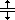

调整大小
停靠窗格
将鼠标恰好悬停在两个窗格之间的边缘处。完成此操作后，光标将变为
水平（ ）或垂直（
）调整大小光标，


具体取决于边缘是垂直还是水平。当鼠标处于此状态时，单击并拖动该边缘到所需的新位置。
对于停靠窗格，与主窗口边缘、状态栏或主菜单/工具栏区域重合的边缘不能移动。
浮动窗格
要调整浮动（floated）窗格的大小，请将鼠标悬停在其四个外边缘之一或某个角上。光标将做出响应：


使用所需的光标单击并拖动即可调整大小。
最大化/取消最大化
浮动（floated）窗格可使用其标题栏上的按钮按如下方式最大化（自动调整大小以占据可用的整个屏幕空间）和取消最大化。
最大化当前窗格
取消最大化当前窗格
取消最大化后，窗格将恢复到最大化之前的大小。 停靠窗格不能最大化。上面所示的按钮在停靠窗格上不可用。
| 这些内容对您有帮助吗？… | FLAC3D © 2019, Itasca | 原文更新于 2020 年 10 月 8 日 |